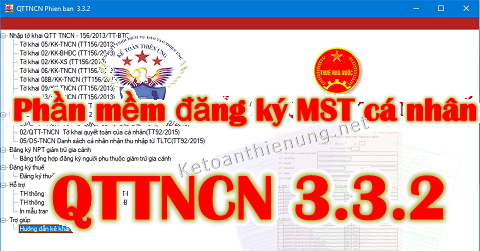
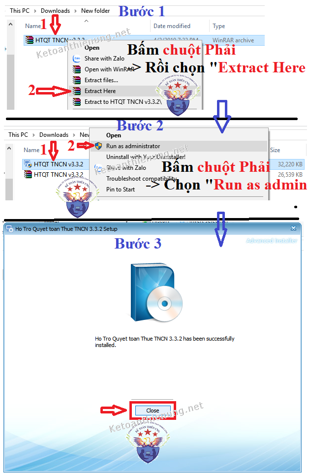
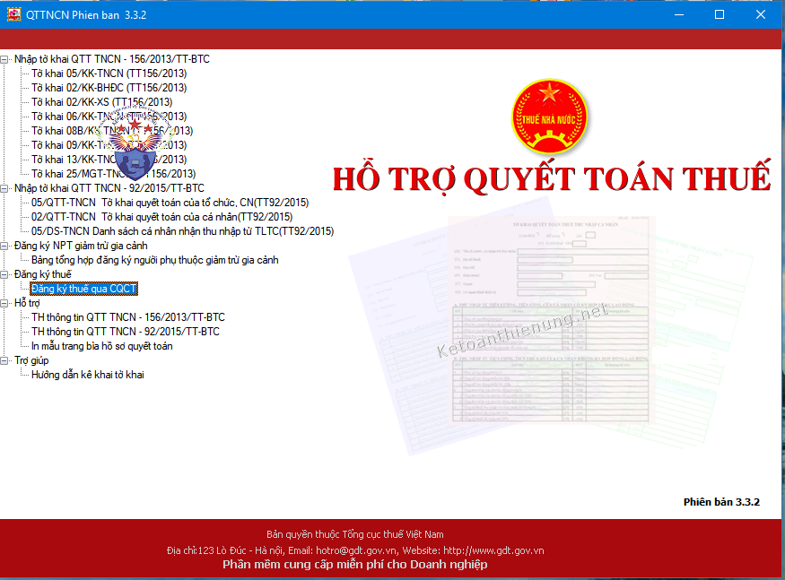

Phần mềm đăng ký MST cá nhân QTTNCN 3.3.2 mới nhất 2019, thay thế phần mềm đăng ký mã số thuế cá nhân QTTNCN 3.3.1. Tải phần mềm QTTNCN 3.3.2 của Tổng cục thuế tại đây:
Lưu ý:
- Việc đăng ký MST cá nhân và đăng ký người phụ thuộc KHÔNG làm trên phần mềm QTTTNCN 3.3.2 nữa.
-> Thay vào đó là đăng ký trên phần mềm HTKK.
Chi tiết các bạn xem tại đây nhé:
a. Nếu bạn đăng ký Mã số thuế cá nhân cho nhân viên trong công ty thì xem tại đây:
b. Nếu bạn đăng ký Người phụ thuộc giảm trừ cảnh thì xem tại đây:
---------------------------------------------------------------------------------------------------

---------------------------------------------------------------------------------
- Ứng dụng có thể cài lên nhiều máy khác nhau và hoạt động độc lập trên từng máy trạm, không cần kết nối mạng, không cần máy chủ.
- Nếu bị lỗi font chữ khi sử dụng phần mềm QTTNCN 3.3.2 (Không gõ được tiếng Việt):
Cách xử lý:
- Bấm chuột phải vào biểu tượng UniKey trên thanh Taskbar.
-> Chọn“Bảng điều khiển…[CS+F5]” hoặc bấm phím tắt Ctrl + Shift + F5.
- Trên bảng điều khiển của UniKey. -> Chọn nút “Mở rộng”
- Trên bản điều khiển mở rộng.-> Tích vào ô “Luôn sử dụng clipboard cho Unicode”
-> . Bấm nút “Đóng” để kết thúc.
---------------------------------------------------------------------------------------------------------
Tải phần mềm đăng ký MST QTTNCN 3.3.2 về tại đây:
------------------------------------------------------------------------------------------
Cách cài đặt phần mềm đăng ký MST cá nhân QTTNCN 3.3.2:
- Sau khi các bạn đã Tải phần mềm QTTNCN 3.3.2 về máy tính -> Các bạn bấm chuột Phải vào file -> Chọn "Extract Here" để giải nén.
- Sau khi giải nén xong -> Các bạn bấm chuột Phải vào file vừa giải nén xong -> Chọn "Run as admin" để bắt đầu cài đặt:

-------------------------------------------------------------------------------
Giao diện phần mềm QTTNCN 3.3.2:

-------------------------------------------------------------------------------
Như vậy là cài đặt xong phần mềm QTTTNCN 3.3.2 nhé.
Kế toán Diệu Tâm chúc các bạn thành công!
--------------------------------------------------------------------------